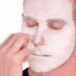

Guess who's back! After almost two months of radio silence, I'm finally posting again. Did you miss me? Of course not. But I don’t blame you because I was too busy living my best life on vacation. You know, the kind where you forget what day it is and seriously consider never coming back.
Life Update: Still Breathing (and Graduated)
That's right, folks! I graduated high school! Don't worry, I won't subject you to a sappy graduation speech because let's be real, nobody has time for that. Let's just say I aced those school requirements and exams with flying colors (okay, maybe a little bragging, but hey, a win is a win ). I also spent some quality time back home in the province, because there's nothing quite like escaping the city and staring at a different kind of ceiling for a while. Yes, the sweet joy of being home, where the Wi-Fi is weak but the food is strong.
Fast forward to now, and I'm back in the bustling city (back to being homesick), which also means I'm back to perfecting the art of the ceiling stare while strategically avoiding actual work (don't worry, I'm a pro). Here’s some good news – I got accepted to college! Yup, a grueling entrance exam and a quick interview later, I’m officially a college student.
Website Update: More Content (Except for That Stats Page)
Alright, let’s talk website. We’re spicing things up around here. We will now have an Artist of the Month because everyone needs some culture in their lives. There will also be a Song of the Month for your monthly jam, handpicked by yours truly, and a Quote of the Month because sometimes you need words of wisdom. And let's not forget the App of the Month, which could be for Windows or Android. iPhone users? Sorry, not sorry . These will all be posted as blogs. Oh, and don’t worry, more blogs are on the way. I promise.
By the way, the stats page ↗ will still be a 404 error because, let’s face it, I’m too lazy to add content there. Maybe someday. Maybe.
Aight that's all for now. Thank you for coming to my TED Talk. See you in another two months, or whenever I remember this blog exists.